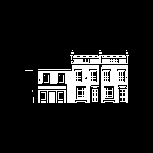
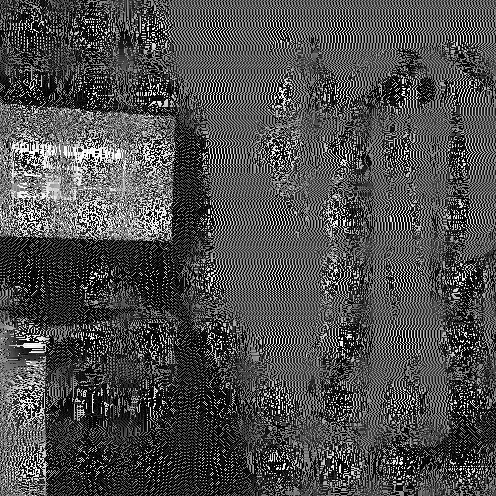
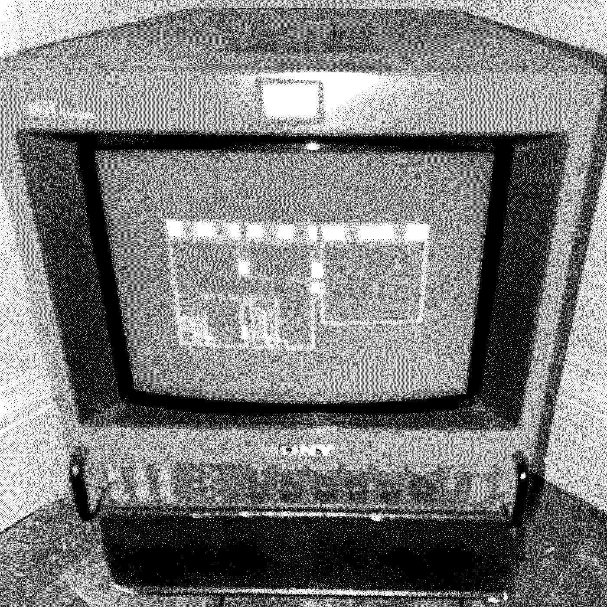

ghost (2023)
[processing / raspberry pi / 256x256 pixels]
Shown at Gallery46 for
'NOW & THEN & NOW…'
and
LIMINALITY ‘[A FRIENDLY ABYSS]’
The gallery is haunted.
Art on walls that live and promptly die like falling dead flies with tombstones plaques.
A black screen, a white painted wall.


Ghost was inspired by the alienation of art in gallery spaces. The ghost moves around the floorplan of the gallery, white noise would play from the screen into the room and visually overwhelm the image based on proximity to the installations location.

